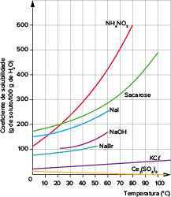

A mistura de água e sal é uma mistura homogênea, caracterizada por uma única fase. Já a mistura de água e areia é uma mistura heterogênea, caracterizada por mais de uma fase.
[...]
Podemos ainda observar, na cozinha da nossa casa, que há limite para dissolver o açúcar e o sal na água. Quando exageramos na quantidade, a água ou o suco ficam turvos, porque o açúcar ou o sal não se dissolveram totalmente. A
quantidade de substância que se dissolve em determinada quantidade de solvente varia muito, em função das características das substâncias envolvidas e da compatibilidade entre elas (soluto e solvente). Quando a água é o solvente,
algumas substâncias possuem solubili-dade infinita, ou seja, misturam-se em qualquer proporção com a água. Outras possuem solubilidade limitada; outras, insolúveis.
[...]
SANTANA, K.; LIMA E. R.
Utilização de uma atividade experimental para discutir conceitos sobre a solubilidade. Universidade Federal de Sergipe. Itabaiana, 2013. Disponível em: <https://www.google.com/search?q=UTILIZA%C3%87%C3%83O +DE+UMA+ATIVIDADE+EXPERIMENTAL+PARA+DISCUTIR+CONCEITOS+SOBRE
+A+SOLUBILIDADE&oq=UTILIZA%C3%87%C3%83O+DE+UMA+ATIVIDADE+ EXPERIMENTAL+PARA+DISCUTIR+ CONCEITOS+SOBRE+A+SOLUBILIDADE&aqs=chrome..69i57.301j0j9& sourceid=chrome&ie=UTF-8#>. Acesso em: 12 jul. 2021.
Quanto de açúcar é preciso para tornar a água turva?
É possível transformar uma solução saturada em insaturada sem alterar as quantidades de soluto e de solvente?
Além da água, que outro solvente tem a capacidade de dissolver muitas substâncias?
Neste capítulo serão abordadas as habilidades
EM13CNT101
,
EM13CNT203
e
EM13CNT307
.
Solubilidade
Quando falamos sobre solubilidade, estamos nos referindo à quan-tidade de um soluto a ser dissolvido por certa quantidade de solvente sob temperatura constante. Ao prepararmos achocolatado para beber em um copo com aproximadamente
300 mL de leite, podemos adicionar diferentes quantidades de achocolatado em pó. A depender da massa de achocolatado adicionada, a bebida poderá apresentar uma quantidade de sólido no fundo do copo. Quando isso acontece, significa
que adicionamos mais sólido do que aquela quantidade de leite conseguia dissolver naquela temperatura; então, para eliminar esse excesso, temos duas alternativas: adicionar mais leite ou alterar a temperatura da solução.
Chamamos de
coeficiente de solubilidade o máximo de soluto que é dissolvido por uma quantidade definida de solvente (na maioria dos casos, definimos a quantidade de solvente em 100 g) a dada temperatura.
Formamos uma solução
insaturada quando adicionamos menor quantidade de soluto do que aquela que o solvente é capaz de dissolver a dada temperatura. Essa solução será homogênea e não apresentará corpo de chão.
Se adicionarmos exatamente a quantidade de soluto possível de ser dissolvida pelo solvente naquela temperatura, ou seja, se adicionarmos uma massa de soluto igual àquela indicada em seu coeficiente de solubilidade, produziremos uma solução
saturada e homogênea, sem a presença de precipitado.
Não é possível afirmar se uma solução é saturada ou insaturada a olho nu.
Turtle Rock Scientific/Science Source/Fotoarena
Em determinadas situações, quando adicionamos mais soluto do que o solvente é capaz de dissolver, podemos formar uma solução
supersaturada . Essa solução é instável, e eventualmente o excesso de soluto tende a cristalizar, formando corpo de chão, que precipita no fundo do recipiente. Após a precipitação, a solução resultante se encontra saturada,
como é o caso do achocolatado que citamos.
Uma solução supersa-turada tem aspecto homogêneo, mas o soluto dissolvido tende a cristalizar e precipitar.
Turtle Rock Scientific/Science Source/Fotoarena
A temperatura é um fator que afeta o coeficiente de solubilidade das substâncias; por isso, é preciso saber a temperatura em que o sistema se encontra para classificar a solução.
Podemos determinar facilmente a massa de precipitado em uma solução. Para isso, basta conhecer a massa total de soluto que foi adicionada ao solvente e o
coeficiente de solubilidade na temperatura adequada: se adicionarmos 40 g de NaC
ℓ
a 100 g de água a 20
°
C
–
sendo o valor do coeficiente de solubilidade do cloreto de sódio nessa temperatura 36 g NaC
ℓ
/100 g H
2 O
–
, a massa de precipitado será a quantidade de sal adicionada (40 g) menos o coeficiente de solubilidade (36 g), ou seja, 40 g
–
36 g
=
4 g.
Questão resolvida
1
Sabendo que o coeficiente de solubilidade do cloreto de amônio (NH
4 C
ℓ
) é de 37,2 g/100 g de H
2 O a 20
°
C e de 55,2 g/100 g de H
2 O a 60
°
C, uma solução com 200 g de água e 110,4 g de cloreto de amônio a 20
°
C é considerada saturada ou insaturada? E a 60
°
C?
Resolução:
A 20
°
C:
100 g água --------- 37,2 g NH
4 C
ℓ
200 g água ---------
x
x=
74,4 g NH
4 C
ℓ
110,4 g foram adicionados, mas apenas 74,4 g são dissolvidos, então a solução é saturada com corpo de fundo.
A massa de corpo de fundo que precipita é:110,4 g
–
74,4 g
=
36 g
A 60
°
C:
100 g água --------- 55,2 g NH
4 C
ℓ
200 g água ---------
y
y=
110,4 g NH
4 C
ℓ
110,4 g foram adicionados, e 110,4 g são dissolvidos, então a solução é saturada sem corpo de fundo.
Até agora, tratamos de soluções em que o soluto é sólido e o solvente é líquido, mas sabemos que o soluto também pode ser um gás ou um líquido. Quando desejamos dissolver um gás em um solvente líquido, precisamos prestar atenção
não só na temperatura, mas também na pressão do sistema.
O aumento de pressão causa maior solubilidade do gás em um líquido; já a diminuição de pressão diminui a solubilidade desse gás no líquido. A temperatura, por sua vez, age de maneira contrária na solubilidade: o aquecimento gera
diminuição da solubilidade dos gases, enquanto temperaturas mais baixas aumentam a solubilidade destes.
A pressão não aumenta nem diminui a solubilidade de sólidos em líquidos; nesses casos, é a temperatura que tem grande influência. Na maioria das vezes, o aumento da temperatura do sistema causa aumento na solubilidade do sólido, principalmente se este
for uma substância iônica. Quando esse comportamento ocorre, a dissolução é
endotérmica , ou seja, favorecida pelo aquecimento. No entanto, também existem substâncias que apresentam diminuição do coeficiente de solubilidade com o aumento da temperatura. Nesse caso, a dissolução é
exotérmica , ou seja, prejudicada pelo aumento da temperatura.
Com essas informações, é possível construir curvas de solubilidade, que demonstram o comportamento da solubilidade com a variação da temperatura, como mostra o gráfico a seguir.
Solubilidade do gás oxigênio em água a várias temperaturas, na pressão atmosférica de 1 atm (760 mmHg)
O gráfico mostra que o aumento de temperatura diminui a solubilidade de gás oxigênio em água. Por isso, o aquecimento global é algo tão danoso, pois modifica os padrões de circulação dos oceanos e contribui para a perda de oxigênio
na água.
Fonte: FIORUCCI, A. BENEDETTI E. A importância do oxigênio dissolvido em sistemas aquáticos.
Química Nova na Escola , n
°
. 22, nov. 2005. Disponível em: <http://qnesc. sbq.org.br/online/qnesc22/a02.png>>. Acesso em: 20 maio 2021.
Aplicando conhecimentos
1
Considerando que o coeficiente de solubilidade da sacarose (C
12 H
22 O
11 ), a 30
°
C, é 220 g/100 g de H
2 O, quanto de açúcar devemos adicionar a 250 mL de água para que a solução seja considerada saturada? Dados: densidade da água
=
1 g/mL.
450 g
500 g
550 g
600 g
650 g
2
A solubilidade do gás carbônico (CO
2 ) em água depende das condições de pressão e de temperatura do sistema. Se observarmos dois lagos, ambos sob a mesma pressão atmosférica, porém um a 15
°
C de temperatura e outro a 30
°
C, em qual dos dois haverá maior quantidade de CO
2 dissolvido?
3
Observe o gráfico para responder ao que se pede.
Foi preparada uma solução saturada de nitrato de potássio e água a 50
°
C, com massa total igual a 500 g. Se essa solução sofrer diminuição da temperatura para 30
°
C, qual será a massa do precipitado formado?
4
Qual é a diferença entre uma solução supersaturada e uma solução saturada com corpo de chão?
5
Unicamp 2021 A forma cristalina de um fármaco é fundamental para seu uso como medicamento. Assim, a indústria farmacêutica, após a síntese de determinado fármaco, deve verificar se ele se apresenta como uma única forma
cristalina ou se é uma mistura polimórfica. Uma das formas de purificar um fármaco nessas condições é utilizar um processo de recristalização: dissolução do material sintetizado, seguida da cristalização da substância desejada.
Observe na tabela abaixo os dados de solubilidade em água de uma dada forma de insulina. A partir dessas informações, caso se queira purificar uma amostra dessa insulina, seria recomendado dissolver essa amostra em quantidade
suficiente de água
a 35
°
C e resfriar lentamente a solução até 15
°
C, promover uma filtração a 15
°
C e recuperar o sólido; toda a insulina seria recuperada.
a 15
°
C e aquecer lentamente a solução até 35
°
C, promover uma filtração a 35
°
C e recuperar o sólido; uma parte da insulina permaneceria em solução.
a 35
°
C e resfriar lentamente a solução até 15
°
C, promover uma filtração a 15
°
C e recuperar o sólido; uma parte da insulina permaneceria em solução.
a 15
°
C e aquecer lentamente a solução até 35
°
C, promover uma filtração a 35
°
C e recuperar o sólido; toda a insulina seria recuperada.
Consolidando saberes
1
Unesp 2017 A 20
°
C, a solubilidade do açúcar comum (C
12 H
22 O
11 , massa molar
=
342 g/mol) em água é cerca de 2,0 kg/L, enquanto a do sal comum (NaC
ℓ
, massa molar
=
58,5 g/mol) é cerca de 0,35 kg/L. A comparação de iguais volumes de soluções saturadas dessas duas substâncias permite afirmar corretamente que, em relação à quantidade total em mol de íons na solução de sal, a quantidade total em mol de moléculas de
soluto dissolvidas na solução de açúcar é, aproximadamente,
a mesma.
6 vezes maior.
6 vezes menor.
a metade.
o triplo.
2
UFRGS 2017 Observe o gráfico e a tabela abaixo, que representam a curva de solubilidade aquosa (em gramas de soluto por 100 g de água) do nitrato de potássio e do nitrato de sódio em função da temperatura.
Assinale a alternativa que preenche corretamente as lacunas do enunciado a seguir, na ordem em que aparecem. A curva A diz respeito ao ________, e a curva B, ao _________. Considerando duas soluções aquosas saturadas e sem precipitado, uma de KNO
3 e outra de NaNO
3 , a 65
°
C, o efeito da diminuição da temperatura acarretará a precipitação de ___________.
Nitrato de potássio – nitrato de sódio – nitrato de potássio
Nitrato de potássio – nitrato de sódio – nitrato de sódio
Nitrato de sódio – nitrato de potássio – nitrato de sódio
Nitrato de sódio – nitrato de potássio – ambas
Nitrato de potássio – nitrato de sódio – ambas
3
Mackenzie-SP 2017 A tabela abaixo mostra a solubilidade do sal X, em 100 g de água, em função da temperatura.
Com base nos resultados obtidos, foram feitas as seguintes afirmativas:
A solubilização do sal X, em água, é exotérmica.
Ao preparar-se uma solução saturada do sal X, a 60
°
C, em 200 g de água e resfriá-la, sob agitação até 10
°
C, serão precipitados 19 g desse sal.
Uma solução contendo 90 g de sal e 300 g de água, a 50
°
C, apresentará precipitado.
Assim, analisando-se as afirmativas acima, é correto dizer que
Nenhuma das afirmativas está certa.
Apenas a afirmativa II está certa.
Apenas as afirmativas II e III estão certas.
Apenas as afirmativas I e III estão certas.
Todas as afirmativas estão certas.
4
Unicid-SP 2017 O gráfico apresenta as solubilidades dos sais A, B, C, D, E e F em função da temperatura.
(www.preuniversitycourses.com. Adaptado.)
Indique o sal cuja solubilidade em água é menos afetada pelo aumento de temperatura.
Considere uma solução preparada com 33 g dosal B em 50 g de água, a 40
°
C. A mistura resultante apresenta corpo de fundo? Justifique sua resposta.
5
IME-RJ 2017 A figura a seguir representa as curvas de solubilidade de duas substâncias A e B.
Com base nela, pode-se afirmar que:
No ponto 1, as soluções apresentam a mesma temperatura, mas as solubilidades de A e B são diferentes.
A solução da substância A está supersaturada no ponto 2.
As soluções são instáveis no ponto 3.
As curvas de solubilidade não indicam mudanças na estrutura dos solutos.
A solubilidade da substância B segue o perfil esperado para a solubilidade de gases em água.
6
Fasm-SP 2016 Analise o gráfico que representa a solubilidade do CO
2 (massa molar 44 g/mol) em água à pressão 1 atm.
(
Química Nova na Escola , vol. 35, 2013.)
A dissolução do gás carbônico em água é um processo endotérmico ou exotérmico? Justifique sua resposta.
Calcule a quantidade de gás carbônico, em mol, dissolvida em 1 litro de água, a 10
°
C e a 1 atm, saturada com este gás. Apresente os cálculos efetuados.
7
UEG-GO Uma solução foi preparada a 30
°
C pela dissolução de 80 g de um sal inorgânico hipotético em 180 g de água. A solubilidade dessa substância se modifica com a variação da temperatura, conforme a tabela a seguir.
Se a solução for resfriada para 20
°
C, a massa, em gramas, do sal que irá precipitar será igual a
48
28
22,4
13,8
8
Uema Um aluno do ensino médio, ao utilizar argumento criativo para classificar uma solução com base em seu coeficiente de solubilidade, apresentou a seguinte resposta:
“Solução insaturada – limonada com pouco açúcar.
Solução saturada – açúcar na medida certa, sente-se um suco de limão adocicado.
Solução supersaturada – uma limonada em que não se sente mais o gosto do limão, só do açúcar”.
A professora explicou que o coeficiente de solubilidade varia de acordo com o soluto, com a quantidade de solvente e com a temperatura em que se encontra a solução, fazendo uso do gráfico abaixo, cuja curva mostra a quantidade
máxima de soluto dissolvido para uma dada temperatura.
Analise o gráfico utilizado pela professora e explique, com base no conceito do aluno, as situações representadas pelas soluções A e B. Justifique cada situação.
9
UFRGS Um experimento é realizado em duas etapas.
Etapa 1: A 200 mL de água destilada contidos em um copo são adicionadas quantidades crescentes de NaC
ℓ
. Essa mistura é agitada intensa e vigorosamente, até que se observe a precipitação de cristais de NaC
ℓ
que não mais solubilizam.
Etapa 2: À mistura obtida na etapa 1 são acrescentados alguns cristais de KMnO
4 . Após algum tempo, observa-se que a fase líquida adquire uma coloração violácea característica do permanganato de potássio.
A análise desse experimento permite concluir que:
A fase líquida obtida ao final da etapa 2 é uma solução supersaturada.
O NaC
ℓ
e o KMnO
4 devem apresentar os mesmos valores de coeficiente de solubilidade.
A solubilização do KMnO
4 na etapa 2 só foi possível porque a solução líquida obtida na etapa 1 estava insaturada.
A solução líquida obtida na etapa 1, embora esteja saturada de NaC
ℓ
, ainda mantém a possibilidade de solubilizar KMnO
4 .
A fase líquida obtida ao final da etapa 2 não pode ser considerada uma solução, porque foram utilizados dois solutos com propriedades diferentes.
10
EBMSP-BA 2017 O conhecimento da solubilidade de sais em água é importante para a realização de atividades em laboratórios e nos procedimentos médicos que envolvam a utilização desses compostos químicos. A dissolução
dessas substâncias químicas em água é influenciada pela temperatura, como mostra o gráfico que apresenta as curvas de solubilidade do nitrato de potássio, KNO
3 , do cromato de potássio K
2 CrO
4 , do cloreto de sódio, NaC
ℓ
, e do sulfato de cério, CeSO
4 .
A análise do gráfico permite afirmar:
O processo de dissolução dos sais constituídos pelos metais alcalinos, em água, é endotérmico.
A mistura de 120 g de cromato de potássio com 200 g de água forma uma solução saturada a 60
°
C.
O coeficiente de solubilidade do sulfato de cério aumenta com o aquecimento do sistema aquoso.
A solubilidade do nitrato de potássio é maior do que a do cromato de potássio a temperatura de 20
°
C
O nitrato de potássio e o cloreto de sódio apresentam o mesmo coeficiente de solubilidade a 40
°
C.
11
Acafe-SC 2016 O cloreto de potássio é um sal que adicionado ao cloreto de sódio é vendido comercialmente como “sal light”, com baixo teor de sódio. Dezoito gramas de cloreto de potássio estão dissolvidos
em 200 g de água e armazenados em um frasco aberto sob temperatura constante de 60
°
C.
Dados: Considere a solubilidade do cloreto de potássio a 60
°
C igual a 45 g/100 g de água. Qual a massa mínima e aproximada de água que deve ser evaporada para iniciar a cristalização do soluto?
160 g
120 g
40 g
80 g
12
UCS-RS 2016 Curvas de solubilidade, como as representadas no gráfico abaixo, descrevem como os coeficientes de solubilidade de substâncias químicas, em um determinado solvente, variam em função da temperatura.

Fonte: BRADY, James E.; RUSSEL, Joel W.; HOLUM, John R.
Química: a matéria e suas transformações . 3. ed. LTC: Rio de Janeiro, V. 1, 2002, p. 385.
Considerando as informações apresentadas pelo gráfico acima, assinale a alternativa correta.
Todas as substâncias químicas são sais, com exceção da sacarose.
O aumento da temperatura de 10
°
C para 40
°
C favorece a solubilização do sulfato de cério (III) em água.
A massa de nitrato de amônio que permanece em solução, quando a temperatura da água é reduzida de 80
°
C para 40
°
C, é de aproximadamente 100 g.
A dissolução do iodeto de sódio em água é endotérmica.
A 0
°
C, todas as substâncias químicas são insolúveis em água.